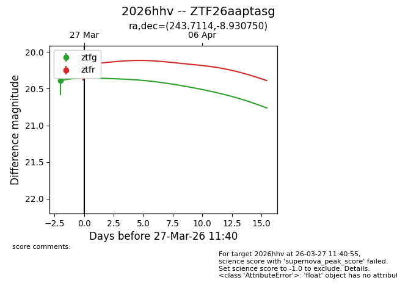
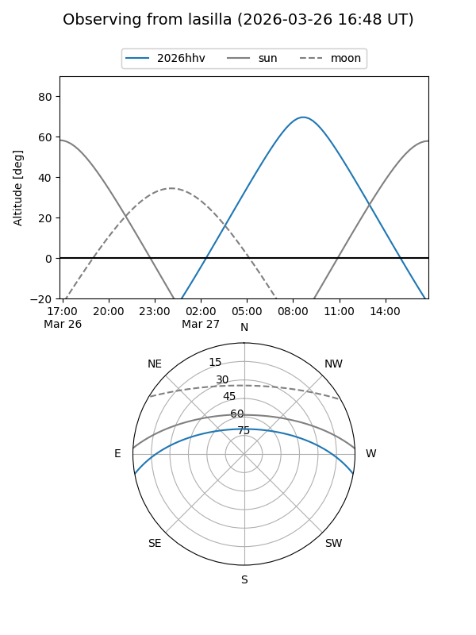
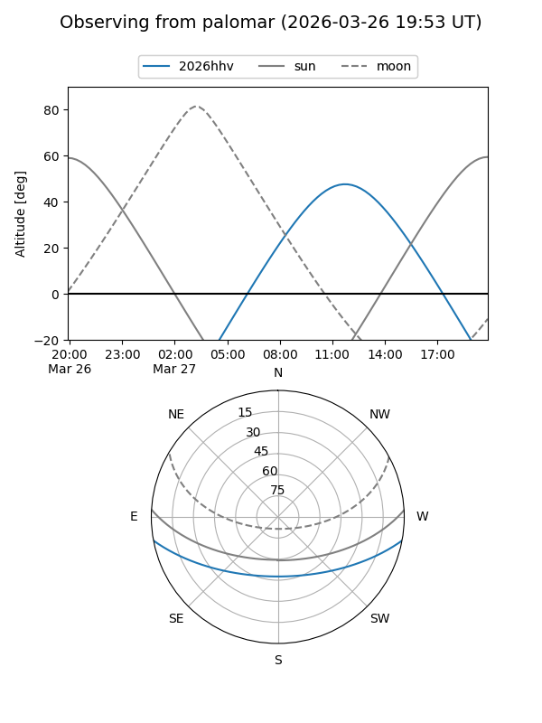
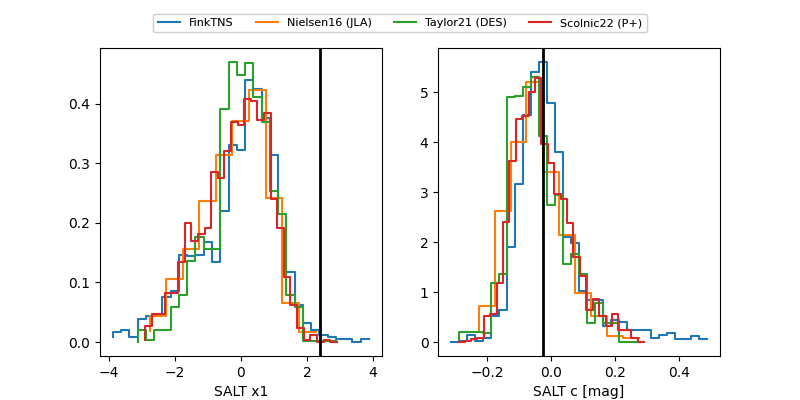

2026hhv
Target 2026hhv at 2026-03-27 11:43
Aliases and brokers:
FINK: link
Lasair: link
ALeRCE: link
TNS: link
YSE: link
alt names
ZTF26aaptasg (ztf,fink_ztf)
2026hhv (tns,yse)
Coordinates:
equatorial (ra, dec) = 243.7114,-8.93075
equatorial (HMS+DMS) = 16:14:50.74,-08:55:50.70
galactic (l, b) = (4.0532,+28.96493)
Flags:
Photometry:
last ztfg=20.39, ztfr=20.18
1 ztfg, 2 ztfr detections
Lightcurve

Visibility


Additional plots
